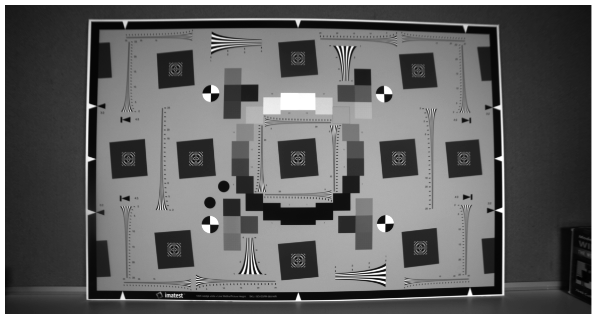
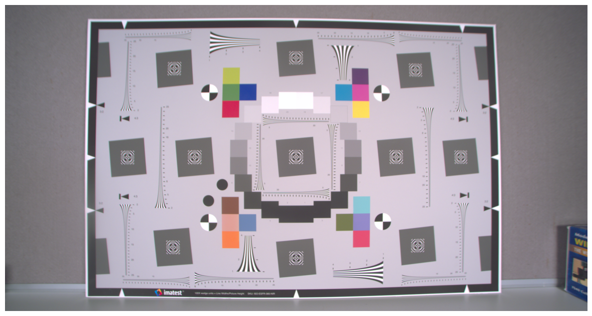

From raw sensor data to a finished image.
A ground-up image signal processor that turns an 8-bit RGGB Bayer capture into a color-corrected, denoised, sharpened image.
- 01Demosaic
- 02Color correct
- 03Denoise
- 04Enhance


Drag across the image to compare the raw capture with the processed output.